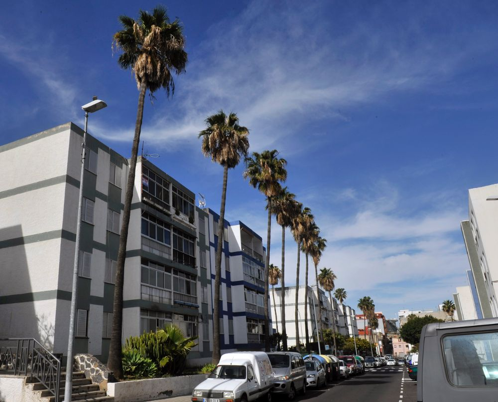

Samuel Alvarado Yanes
Taco es una de las entidades de población que forman el municipio de San Cristóbal de La Laguna, en la isla de Tenerife —Canarias, España—. Administrativamente se incluye en la Zona 3 del municipio.1 Taco está formado a su vez por los núcleos o barrios diferenciados de El Cardonal, El Pilar, Las Torres, San Luis Gonzaga, San Matías, San Miguel de Chimisay y Zona Industrial de Taco.2
Mi barrio
Editado por Sergio, el famoso del paso es el volcan